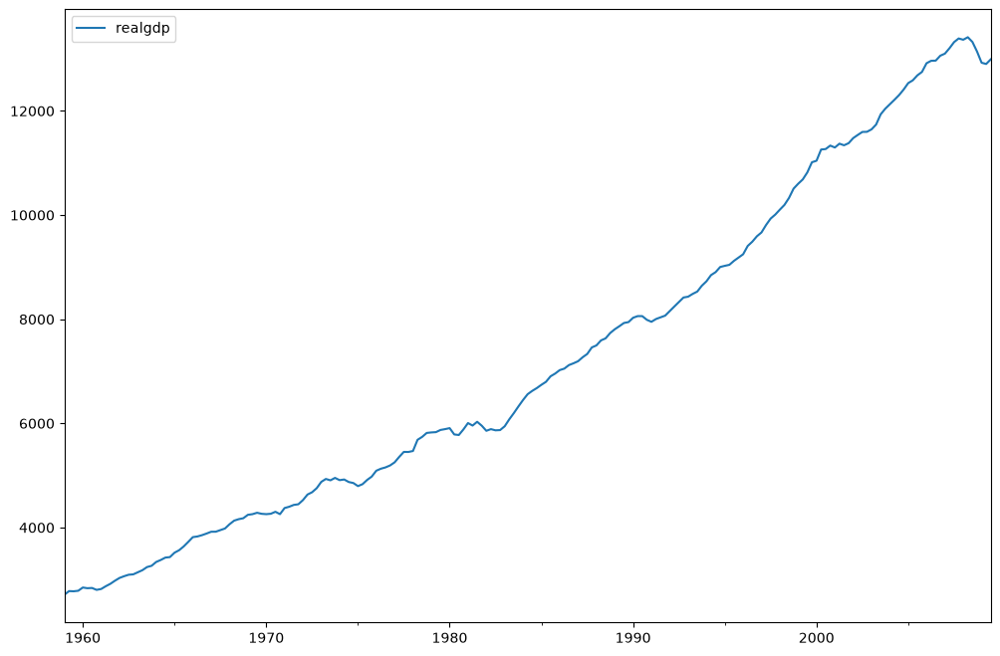
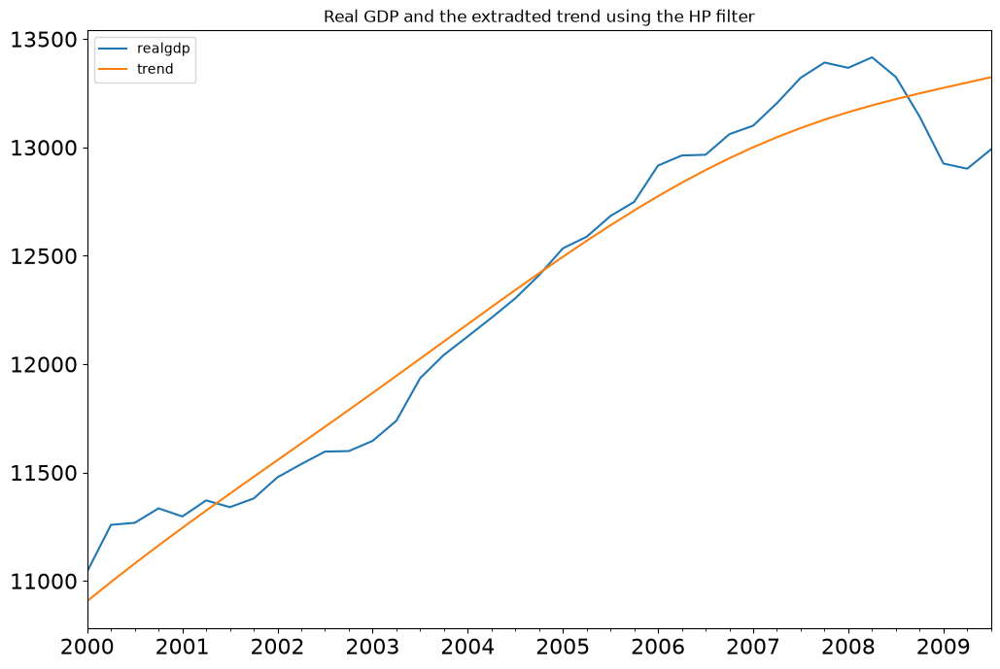
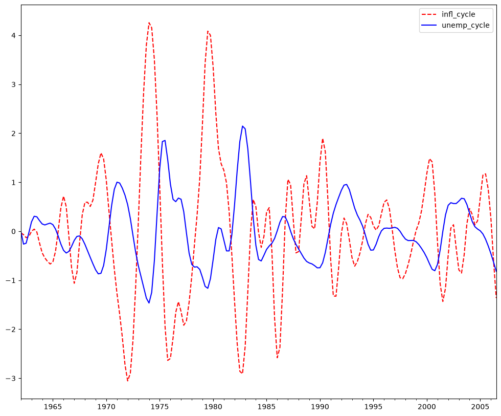
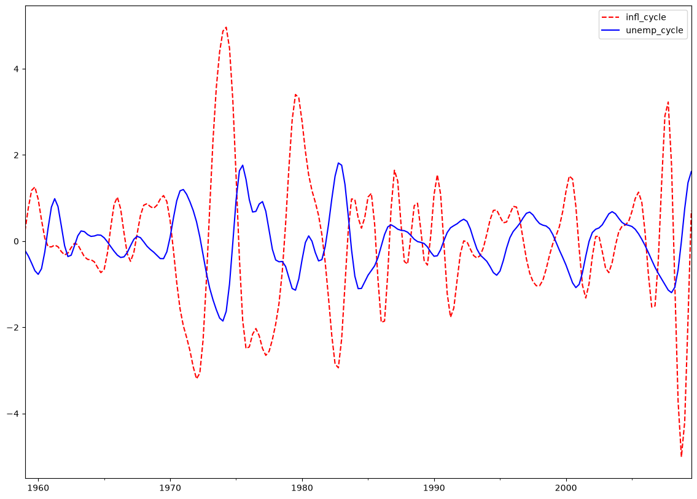

Time Series Filters#
[1]:
%matplotlib inline
[2]:
import matplotlib.pyplot as plt
import pandas as pd
import statsmodels.api as sm
[3]:
dta = sm.datasets.macrodata.load_pandas().data
[4]:
index = pd.Index(sm.tsa.datetools.dates_from_range("1959Q1", "2009Q3"))
print(index)
DatetimeIndex(['1959-03-31', '1959-06-30', '1959-09-30', '1959-12-31',
'1960-03-31', '1960-06-30', '1960-09-30', '1960-12-31',
'1961-03-31', '1961-06-30',
...
'2007-06-30', '2007-09-30', '2007-12-31', '2008-03-31',
'2008-06-30', '2008-09-30', '2008-12-31', '2009-03-31',
'2009-06-30', '2009-09-30'],
dtype='datetime64[us]', length=203, freq=None)
[5]:
dta.index = index
del dta["year"]
del dta["quarter"]
[6]:
print(sm.datasets.macrodata.NOTE)
::
Number of Observations - 203
Number of Variables - 14
Variable name definitions::
year - 1959q1 - 2009q3
quarter - 1-4
realgdp - Real gross domestic product (Bil. of chained 2005 US$,
seasonally adjusted annual rate)
realcons - Real personal consumption expenditures (Bil. of chained
2005 US$, seasonally adjusted annual rate)
realinv - Real gross private domestic investment (Bil. of chained
2005 US$, seasonally adjusted annual rate)
realgovt - Real federal consumption expenditures & gross investment
(Bil. of chained 2005 US$, seasonally adjusted annual rate)
realdpi - Real private disposable income (Bil. of chained 2005
US$, seasonally adjusted annual rate)
cpi - End of the quarter consumer price index for all urban
consumers: all items (1982-84 = 100, seasonally adjusted).
m1 - End of the quarter M1 nominal money stock (Seasonally
adjusted)
tbilrate - Quarterly monthly average of the monthly 3-month
treasury bill: secondary market rate
unemp - Seasonally adjusted unemployment rate (%)
pop - End of the quarter total population: all ages incl. armed
forces over seas
infl - Inflation rate (ln(cpi_{t}/cpi_{t-1}) * 400)
realint - Real interest rate (tbilrate - infl)
[7]:
print(dta.head(10))
realgdp realcons realinv realgovt realdpi cpi m1 \
1959-03-31 2710.349 1707.4 286.898 470.045 1886.9 28.98 139.7
1959-06-30 2778.801 1733.7 310.859 481.301 1919.7 29.15 141.7
1959-09-30 2775.488 1751.8 289.226 491.260 1916.4 29.35 140.5
1959-12-31 2785.204 1753.7 299.356 484.052 1931.3 29.37 140.0
1960-03-31 2847.699 1770.5 331.722 462.199 1955.5 29.54 139.6
1960-06-30 2834.390 1792.9 298.152 460.400 1966.1 29.55 140.2
1960-09-30 2839.022 1785.8 296.375 474.676 1967.8 29.75 140.9
1960-12-31 2802.616 1788.2 259.764 476.434 1966.6 29.84 141.1
1961-03-31 2819.264 1787.7 266.405 475.854 1984.5 29.81 142.1
1961-06-30 2872.005 1814.3 286.246 480.328 2014.4 29.92 142.9
tbilrate unemp pop infl realint
1959-03-31 2.82 5.8 177.146 0.00 0.00
1959-06-30 3.08 5.1 177.830 2.34 0.74
1959-09-30 3.82 5.3 178.657 2.74 1.09
1959-12-31 4.33 5.6 179.386 0.27 4.06
1960-03-31 3.50 5.2 180.007 2.31 1.19
1960-06-30 2.68 5.2 180.671 0.14 2.55
1960-09-30 2.36 5.6 181.528 2.70 -0.34
1960-12-31 2.29 6.3 182.287 1.21 1.08
1961-03-31 2.37 6.8 182.992 -0.40 2.77
1961-06-30 2.29 7.0 183.691 1.47 0.81
[8]:
fig = plt.figure(figsize=(12, 8))
ax = fig.add_subplot(111)
dta.realgdp.plot(ax=ax)
legend = ax.legend(loc="upper left")
legend.prop.set_size(20)

Hodrick-Prescott Filter#
The Hodrick-Prescott filter separates a time-series \(y_t\) into a trend \(\tau_t\) and a cyclical component \(\zeta_t\)
The components are determined by minimizing the following quadratic loss function
[9]:
gdp_cycle, gdp_trend = sm.tsa.filters.hpfilter(dta.realgdp)
[10]:
gdp_decomp = dta[["realgdp"]].copy()
gdp_decomp["cycle"] = gdp_cycle
gdp_decomp["trend"] = gdp_trend
[11]:
fig = plt.figure(figsize=(12, 8))
ax = fig.add_subplot(111)
gdp_decomp[["realgdp", "trend"]]["2000-03-31":].plot(ax=ax, fontsize=16)
legend = ax.get_legend()
legend.prop.set_size(20)

Baxter-King approximate band-pass filter: Inflation and Unemployment#
Explore the hypothesis that inflation and unemployment are counter-cyclical.#
The Baxter-King filter is intended to explicitly deal with the periodicity of the business cycle. By applying their band-pass filter to a series, they produce a new series that does not contain fluctuations at higher or lower than those of the business cycle. Specifically, the BK filter takes the form of a symmetric moving average
where \(a_{-k}=a_k\) and \(\sum_{k=-k}^{K}a_k=0\) to eliminate any trend in the series and render it stationary if the series is I(1) or I(2).
For completeness, the filter weights are determined as follows
where \(\theta\) is a normalizing constant such that the weights sum to zero.
\(P_L\) and \(P_H\) are the periodicity of the low and high cut-off frequencies. Following Burns and Mitchell’s work on US business cycles which suggests cycles last from 1.5 to 8 years, we use \(P_L=6\) and \(P_H=32\) by default.
[12]:
bk_cycles = sm.tsa.filters.bkfilter(dta[["infl", "unemp"]])
We lose K observations on both ends. It is suggested to use K=12 for quarterly data.
[13]:
fig = plt.figure(figsize=(12, 10))
ax = fig.add_subplot(111)
bk_cycles.plot(ax=ax, style=["r--", "b-"])
[13]:
<Axes: >

Christiano-Fitzgerald approximate band-pass filter: Inflation and Unemployment#
The Christiano-Fitzgerald filter is a generalization of BK and can thus also be seen as weighted moving average. However, the CF filter is asymmetric about \(t\) as well as using the entire series. The implementation of their filter involves the calculations of the weights in
for \(t=3,4,...,T-2\), where
\(\tilde B_{T-t}\) and \(\tilde B_{t-1}\) are linear functions of the \(B_{j}\)’s, and the values for \(t=1,2,T-1,\) and \(T\) are also calculated in much the same way. \(P_{U}\) and \(P_{L}\) are as described above with the same interpretation.
The CF filter is appropriate for series that may follow a random walk.
[14]:
print(sm.tsa.stattools.adfuller(dta["unemp"])[:3])
(np.float64(-2.53645846733463), np.float64(0.10685366457233608), 9)
[15]:
print(sm.tsa.stattools.adfuller(dta["infl"])[:3])
(np.float64(-3.054514496257235), np.float64(0.030107620863486007), 2)
[16]:
cf_cycles, cf_trend = sm.tsa.filters.cffilter(dta[["infl", "unemp"]])
print(cf_cycles.head(10))
infl_cycle unemp_cycle
1959-03-31 0.237927 -0.216867
1959-06-30 0.770007 -0.343779
1959-09-30 1.177736 -0.511024
1959-12-31 1.256754 -0.686967
1960-03-31 0.972128 -0.770793
1960-06-30 0.491889 -0.640601
1960-09-30 0.070189 -0.249741
1960-12-31 -0.130432 0.301545
1961-03-31 -0.134155 0.788992
1961-06-30 -0.092073 0.985356
[17]:
fig = plt.figure(figsize=(14, 10))
ax = fig.add_subplot(111)
cf_cycles.plot(ax=ax, style=["r--", "b-"])
[17]:
<Axes: >

Filtering assumes a priori that business cycles exist. Due to this assumption, many macroeconomic models seek to create models that match the shape of impulse response functions rather than replicating properties of filtered series. See VAR notebook.